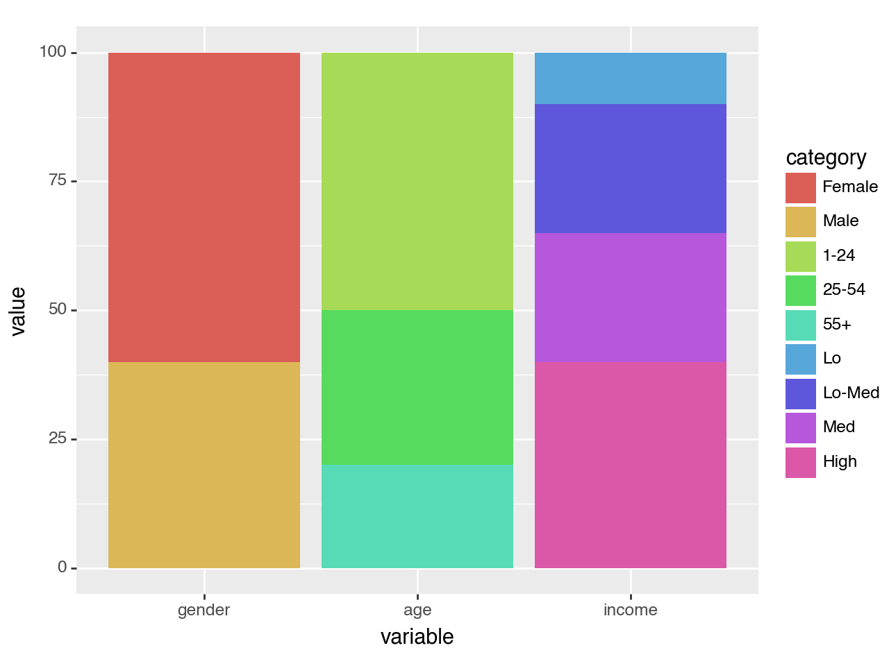
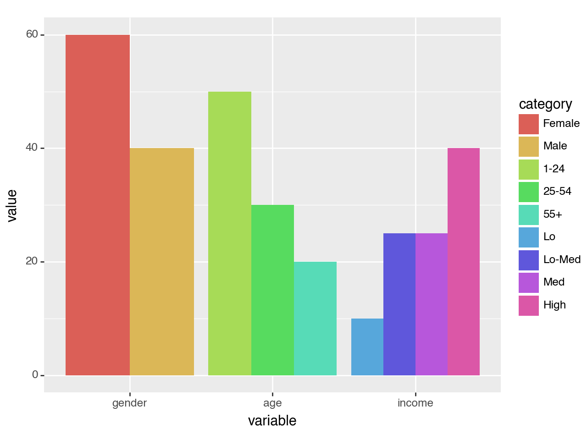
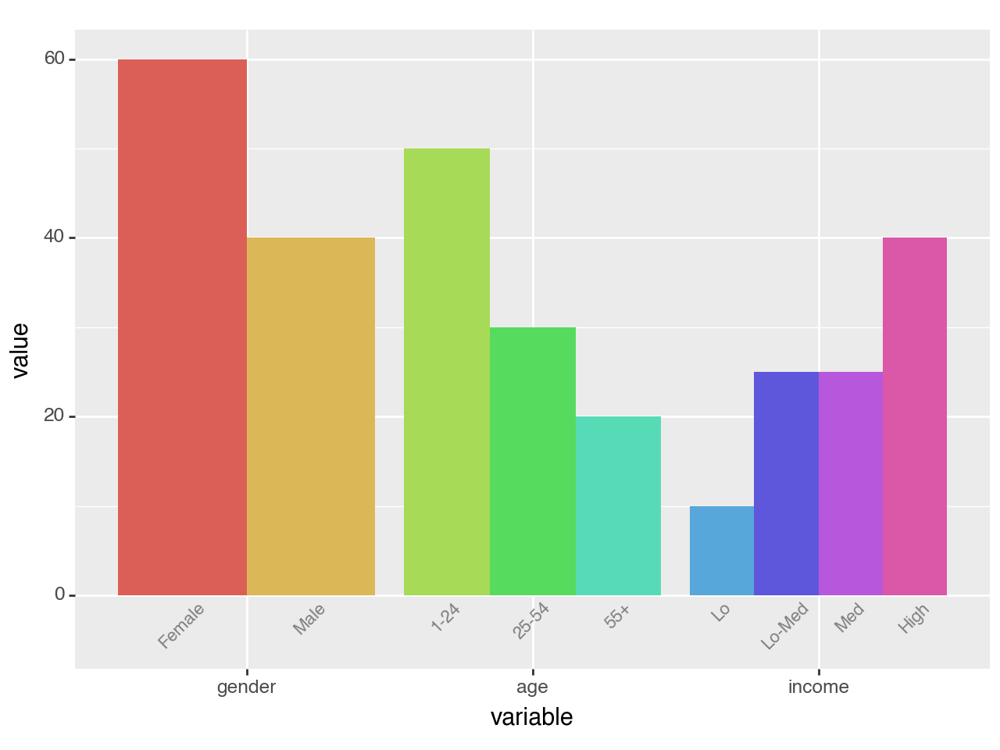
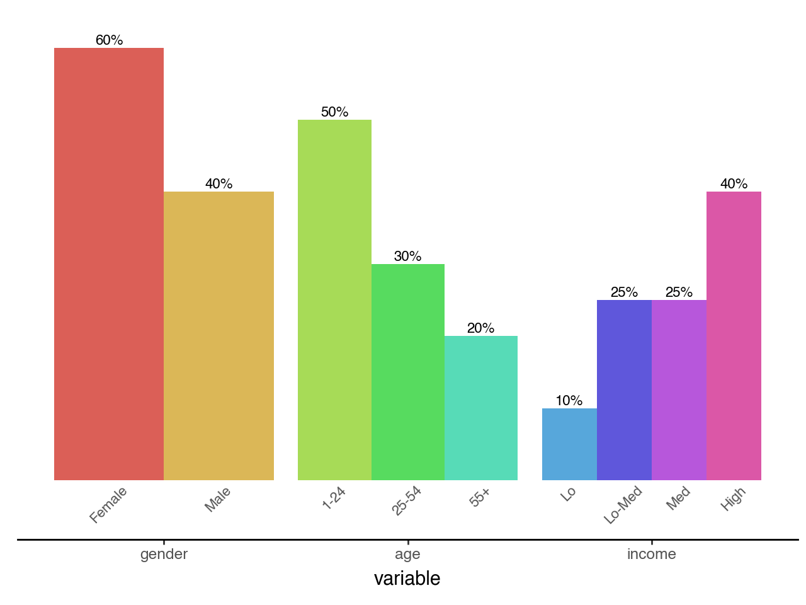

plotnine.geoms.geom_col¶
- class plotnine.geoms.geom_col(mapping: Aes | None = None, data: DataLike | None = None, **kwargs: Any)[source]¶
Bar plot with base on the x-axis
This is an alternate version of
geom_barthat maps the height of bars to an existing variable in your data. If you want the height of the bar to represent a count of cases, usegeom_bar.Usage
geom_col(mapping=None, data=None, stat='identity', position='stack', na_rm=False, inherit_aes=True, show_legend=None, raster=False, width=None, **kwargs)
Only the
dataandmappingcan be positional, the rest must be keyword arguments.**kwargscan be aesthetics (or parameters) used by thestat.- Parameters:
- mapping
aes, optional Aesthetic mappings created with
aes(). If specified andinherit.aes=True, it is combined with the default mapping for the plot. You must supply mapping if there is no plot mapping.Aesthetic
Default value
x
y
alpha
1color
Nonefill
'#595959'group
linetype
'solid'size
0.5The bold aesthetics are required.
- data
dataframe, optional The data to be displayed in this layer. If
None, the data from from theggplot()call is used. If specified, it overrides the data from theggplot()call.- stat
stror stat, optional (default:stat_identity) The statistical transformation to use on the data for this layer. If it is a string, it must be the registered and known to Plotnine.
- position
stror position, optional (default:position_stack) Position adjustment. If it is a string, it must be registered and known to Plotnine.
- na_rmbool, optional (default:
False) If
False, removes missing values with a warning. IfTruesilently removes missing values.- inherit_aesbool, optional (default:
True) If
False, overrides the default aesthetics.- show_legendbool or
dict, optional (default:None) Whether this layer should be included in the legends.
Nonethe default, includes any aesthetics that are mapped. If abool,Falsenever includes andTruealways includes. Adictcan be used to exclude specific aesthetis of the layer from showing in the legend. e.gshow_legend={'color': False}, any other aesthetic are included by default.- rasterbool, optional (default:
False) If
True, draw onto this layer a raster (bitmap) object even ifthe final image is in vector format.- width
float, (default:None) Bar width. If
None, the width is set to 90% of the resolution of the data.
- mapping
See also
Examples¶
[1]:
import pandas as pd
import numpy as np
from plotnine import (
ggplot,
aes,
geom_col,
geom_text,
position_dodge,
lims,
theme,
element_text,
element_blank,
element_rect,
element_line,
)
Two Variable Bar Plot¶
Visualising on a single plot the values of a variable that has nested (and independent) variables
Create the data
[2]:
df = pd.DataFrame({
'variable': ['gender', 'gender', 'age', 'age', 'age', 'income', 'income', 'income', 'income'],
'category': ['Female', 'Male', '1-24', '25-54', '55+', 'Lo', 'Lo-Med', 'Med', 'High'],
'value': [60, 40, 50, 30, 20, 10, 25, 25, 40],
})
df['variable'] = pd.Categorical(df['variable'], categories=['gender', 'age', 'income'])
df['category'] = pd.Categorical(df['category'], categories=df['category'])
df
[2]:
| variable | category | value | |
|---|---|---|---|
| 0 | gender | Female | 60 |
| 1 | gender | Male | 40 |
| 2 | age | 1-24 | 50 |
| 3 | age | 25-54 | 30 |
| 4 | age | 55+ | 20 |
| 5 | income | Lo | 10 |
| 6 | income | Lo-Med | 25 |
| 7 | income | Med | 25 |
| 8 | income | High | 40 |
We want to visualise this data and at a galance get an idea to how the value breaks down along the categorys for the different variable. Note that each variable has different categorys.
First we make a simple plot with all this information and see what to draw from it.
[3]:
(ggplot(df, aes(x='variable', y='value', fill='category'))
+ geom_col()
)

[3]:
<Figure Size: (640 x 480)>
All the values along each variable add up to 100, but stacked together the difference within and without the groups is not clear. The solution is to dodge the bars.
[4]:
(ggplot(df, aes(x='variable', y='value', fill='category'))
+ geom_col(stat='identity', position='dodge')) # modified

[4]:
<Figure Size: (640 x 480)>
This is good, it gives us the plot we want but the legend is not great. Each variable has a different set of categorys, but the legend has them all clamped together. We cannot easily change the legend, but we can replicate it's purpose by labelling the individual bars.
To do this, we create a geom_text with position_dodge(width=0.9) to match the ratio of the space taken up by each variable. If there was no spacing between the bars of different variables, we would have width=1.
A minor quack, when text extends beyond the limits we have to manually make space or it would get clipped. Therefore we adjust the bottom y limits.
[5]:
dodge_text = position_dodge(width=0.9) # new
(ggplot(df, aes(x='variable', y='value', fill='category'))
+ geom_col(stat='identity', position='dodge', show_legend=False) # modified
+ geom_text(aes(y=-.5, label='category'), # new
position=dodge_text,
color='gray', size=8, angle=45, va='top')
+ lims(y=(-5, 60)) # new
)

[5]:
<Figure Size: (640 x 480)>
Would it look too crowded if we add value labels on top of the bars?
[6]:
dodge_text = position_dodge(width=0.9)
(ggplot(df, aes(x='variable', y='value', fill='category'))
+ geom_col(stat='identity', position='dodge', show_legend=False)
+ geom_text(aes(y=-.5, label='category'),
position=dodge_text,
color='gray', size=8, angle=45, va='top')
+ geom_text(aes(label='value'), # new
position=dodge_text,
size=8, va='bottom', format_string='{}%')
+ lims(y=(-5, 60))
)
[6]:
<Figure Size: (640 x 480)>
That looks okay. The values line up with the categorys because we used the same dodge parameters. For the final polish, we remove the y-axis, clear out the panel and make the variable and category labels have the same color.
[7]:
dodge_text = position_dodge(width=0.9)
ccolor = '#555555'
# Gallery Plot
(ggplot(df, aes(x='variable', y='value', fill='category'))
+ geom_col(stat='identity', position='dodge', show_legend=False)
+ geom_text(aes(y=-.5, label='category'),
position=dodge_text,
color=ccolor, size=8, angle=45, va='top') # modified
+ geom_text(aes(label='value'),
position=dodge_text,
size=8, va='bottom', format_string='{}%')
+ lims(y=(-5, 60))
+ theme(panel_background=element_rect(fill='white'), # new
axis_title_y=element_blank(),
axis_line_x=element_line(color='black'),
axis_line_y=element_blank(),
axis_text_y=element_blank(),
axis_text_x=element_text(color=ccolor),
axis_ticks_major_y=element_blank(),
panel_grid=element_blank(),
panel_border=element_blank())
)

[7]:
<Figure Size: (640 x 480)>
Credit: I saved a plot this example is based on a while ago and forgot/misplaced the link to the source. The user considered it a minor coup.